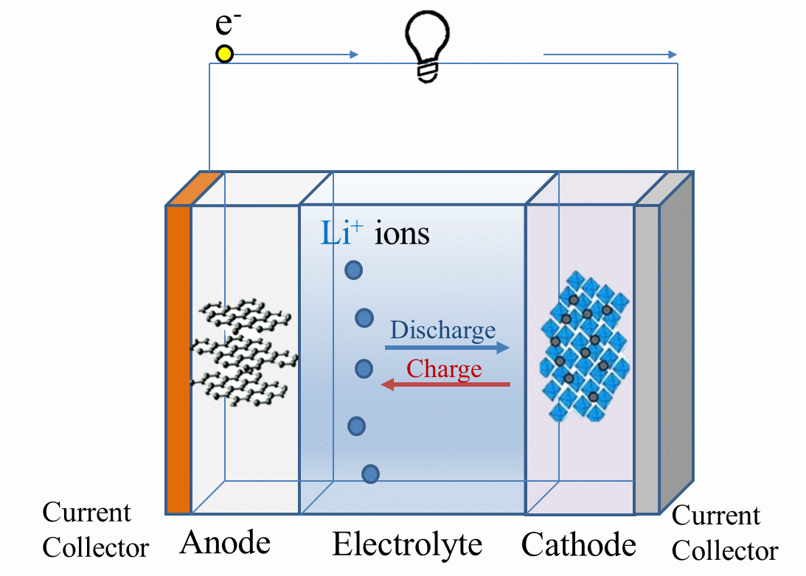
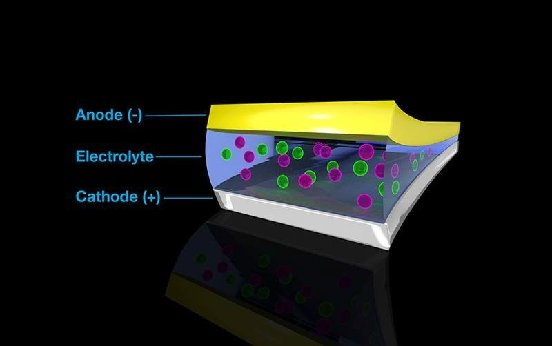

Basic Concept of Lithium Battery Electrolyte
Lithium battery electrolyte helps ions move in the battery. It is made of lithium salt and organic solvents. The electrolyte lets ions move between the battery's positive and negative sides. This helps lithium-ion batteries get high voltage and energy. The main parts of the electrolyte are lithium salt, organic solvents, and additives, mixed in a set ratio.
Types of Lithium Battery Electrolyte
1. Liquid Electrolyte
Liquid electrolyte was the first type used in lithium batteries. It has lithium salts, organic solvents, and additives. Lithium salt helps move lithium ions. Organic solvents let lithium ions move in the battery. Additives make the electrolyte more stable and conductive.
Advantages: Easy to produce and widely used in many batteries. Challenges: Risk of leakage and flammability.
2. Gel Electrolyte
Gel electrolyte is between liquid and solid. It has high ion conductivity and less risk of leaking. It is made of a polymer matrix, lithium salt, organic solvent, and additives. Adjusting the polymer matrix and lithium salt mix makes the gel. This makes the battery safer and last longer.
Advantages: Safer than liquid electrolytes, less risk of leakage. Challenges: More complex to produce and may have lower conductivity than liquid electrolytes.
3. Solid Electrolyte
Solid electrolyte has no organic solvents. It has lithium salts, a polymer matrix, and additives. Solid electrolytes are safer and have more energy but need better ion conductivity and cycle life.
Advantages: Highest safety, no risk of leakage, and high energy density. Challenges: Lower ion conductivity and higher production costs.

The Role of Lithium Battery Electrolyte
1. Provide ion Transmission
The electrolyte has lithium ions (Li+) that move freely. When charging, lithium ions move from the positive to the negative side. When discharging, they move back. This back-and-forth movement completes the current flow.
2. Maintain Battery Reaction Balance
The electrolyte has solvents and additives that keep the battery reaction balanced. They help lithium ions move efficiently and steadily between the electrolyte and electrodes.
3. Maintain Battery Temperature
The electrolyte solvent absorbs and releases heat, helping control battery temperature. It prevents overheating by absorbing heat and stops overcooling by releasing heat.
Current Research Trends
Researchers are working on improving the safety, conductivity, and longevity of electrolytes. New materials and additives are being tested to enhance performance. There is a strong focus on developing solid electrolytes to overcome their current limitations. Advanced additives are being developed to enhance the stability and efficiency of liquid and gel electrolytes. Research is also exploring the use of nanotechnology to improve the performance and safety of electrolytes.
Future Prospects
With ongoing research, future electrolytes will likely offer even better safety, conductivity, and energy density. Innovations in electrolyte technology will play a crucial role in making electric vehicles and portable devices more efficient and reliable. Solid-state batteries, which use solid electrolytes, are expected to revolutionize the industry by offering safer and more energy-dense batteries. Additionally, hybrid electrolytes that combine the best properties of liquid, gel, and solid electrolytes are being explored to create high-performance batteries.

Innovations in the Industry
The industry is seeing several exciting innovations in electrolyte technology. Researchers are developing electrolytes that can operate at a wider temperature range, enhancing the performance of batteries in extreme conditions. Self-healing electrolytes are being explored to extend battery life by automatically repairing damage. There is also a push towards more environmentally friendly electrolytes, reducing the ecological impact of battery production and disposal. Companies are investing in advanced manufacturing techniques to produce electrolytes more efficiently and at a lower cost.
Summary
The types and functions of lithium battery electrolytes are key in battery tech research. Understanding different electrolytes and how they work helps improve battery tech. As technology grows, new electrolytes will bring more breakthroughs and uses for lithium batteries. Future innovations in electrolytes will drive the development of safer, more efficient, and more sustainable batteries, supporting the growth of electric vehicles and portable electronics. The continued advancement in electrolyte technology promises to unlock new possibilities for energy storage, shaping a cleaner and more energy-efficient future.